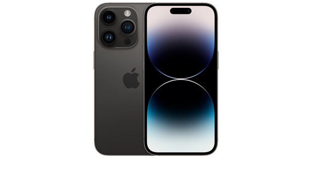
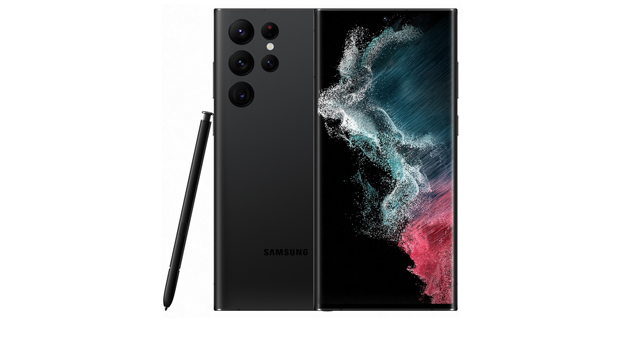
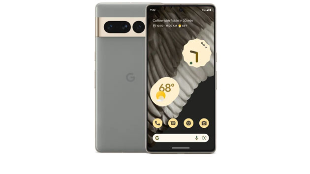
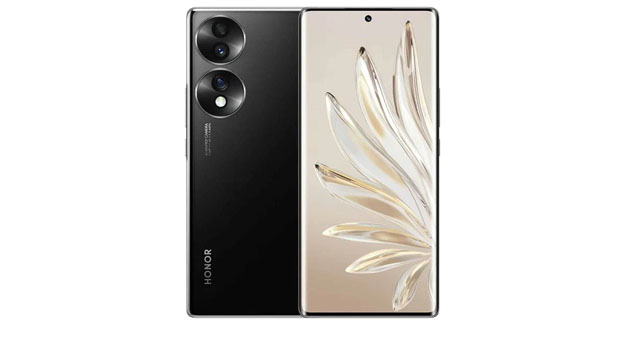

Apple iPhone 14 Pro Max
Смартфон iPhone 14 Pro Max обрел улучшенную систему камер и дисплей с поддержкой функции Always-On. Применен фирменный производительный чип A16 Bionic
...

Samsung Galaxy S22 Ultra
Смартфон Galaxy S22 Ultra получил стилус, который прячется в корпус. Здесь также мощный процессор с восемью ядрами и экосистемы Samsung. Установлен дисплей
...

Google Pixel 7 Pro
Google снова врывается в мир смартфонов. На этот раз — с продвинутой камерой с 5-кратным зумом, новым дизайном и собственным процессором
...

Honor 70
Обновление нашумевшего Honor 50. Первый в мире смартфон с сенсором Sony IMX800. Аппарат получил легкий и тонкий корпус из стекла (178 г). С нуля до 60%
...